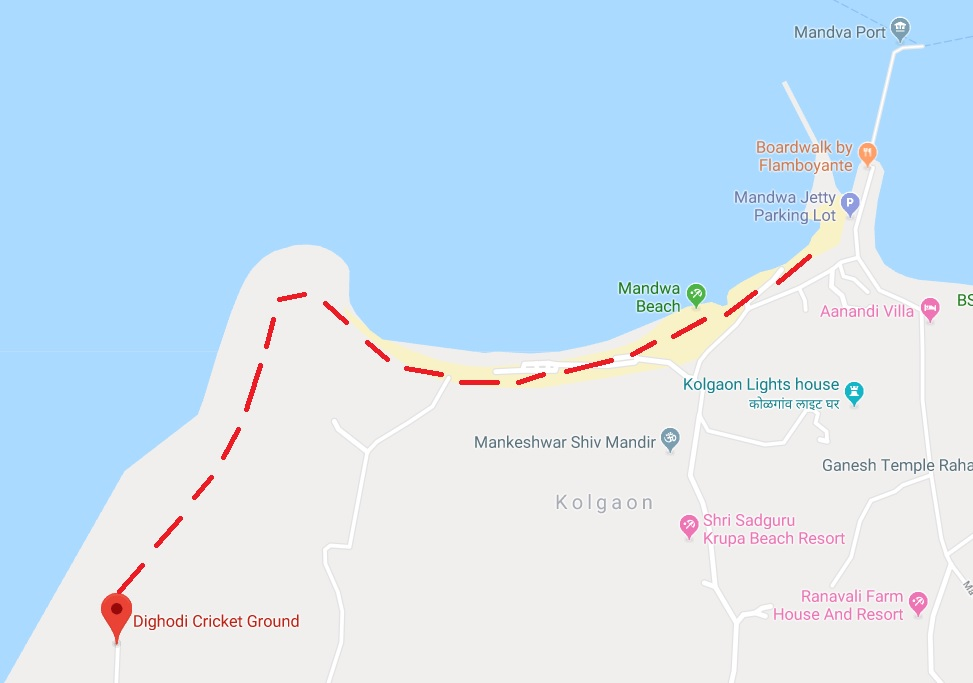

During low tide you can have a long walk from Dighodi beach to Mandwa beach. as shown in map on this page. 
Mandwa Beach is one of the spectacular beach in Alibag.
It also has well developed jetty known as Mandwa Jetty.
You can get here through Boat from Gateway of India Mumbai to mandwa jetty.
Location: Mandwa beach is 19km away from alibag
and 4.3km away from dighodi beach.
Awas Beach has its coast lined-up with "she oak" (suruchi) trees,also you can enjoy the peaceful scenery.
Location:Awas Beach is 3.8km away from Dighodi Beach.
Karmarkar Museum of Sculpture has a attractive collection of sculptures,made by the great Indian artist "Vinayak Pandurang Karmarkar".
Museum is set into a house in sasawane village.
Location:Karmarkar Museum of Sculpture is 1.4 km away from Dighodi.
Alibag is a highly recommended holiday destination now a days. It has attractive beach and Kulaba fort surrounded by sea. this place entertains you with different rides. you can also taste the delicious sea food in Alibag click here to explore
How to reach here: one can travel from Mumbai to Mandwa jetty and from there you can seat in available buses which will depart to Alibag. or by loacal buses from Mumbai,Panvel to Alibag